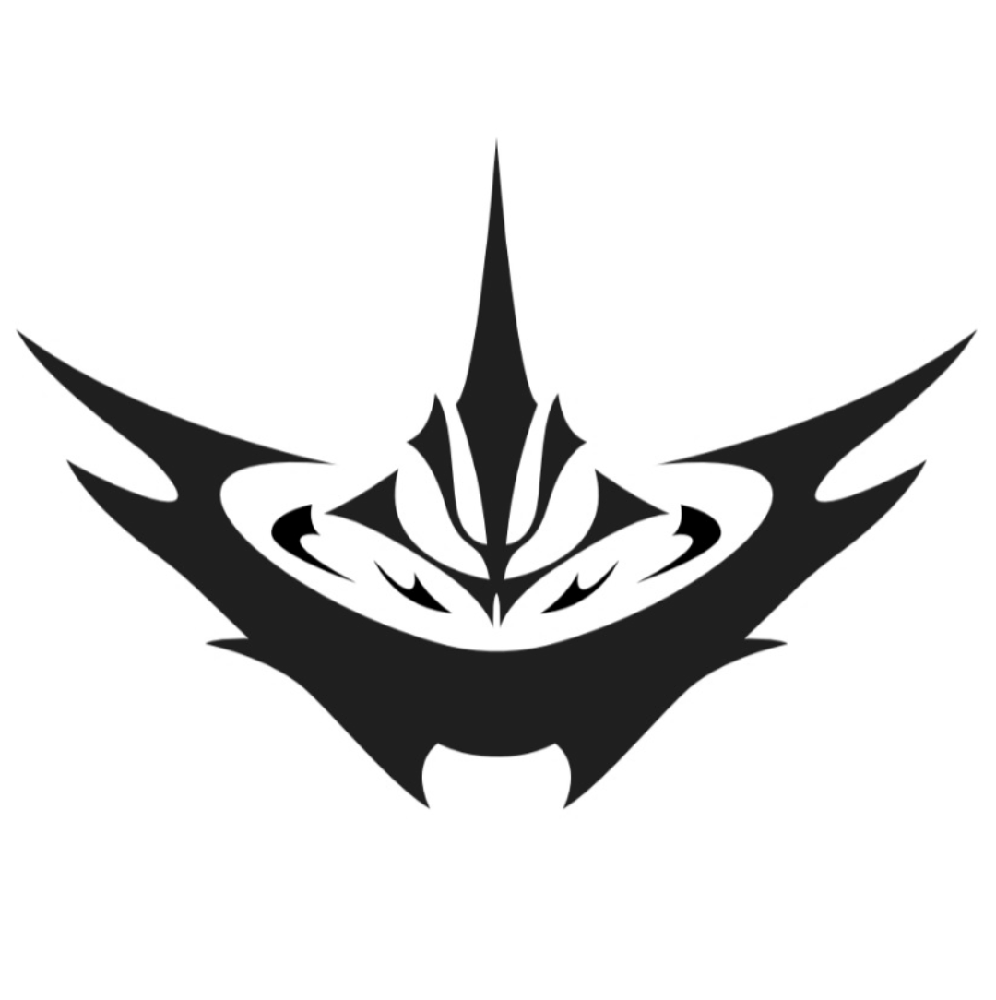

Наша команда создала концепт, объединяющий эстетику уличного стрит-стайла и комфорт премиального хлопка. Это не просто одежда — это принадлежность к сообществу.
Вещи от лейбла SK*S уникальны: они доступны только через закрытые розыгрыши. Отмечаем третью годовщину семьи первым эксклюзивным дропом: 12.10.26.
В будущих коллекциях SK*S мы планируем расширить линейку аксессуаров и кастомных элементов, доступных исключительно для активных участников.